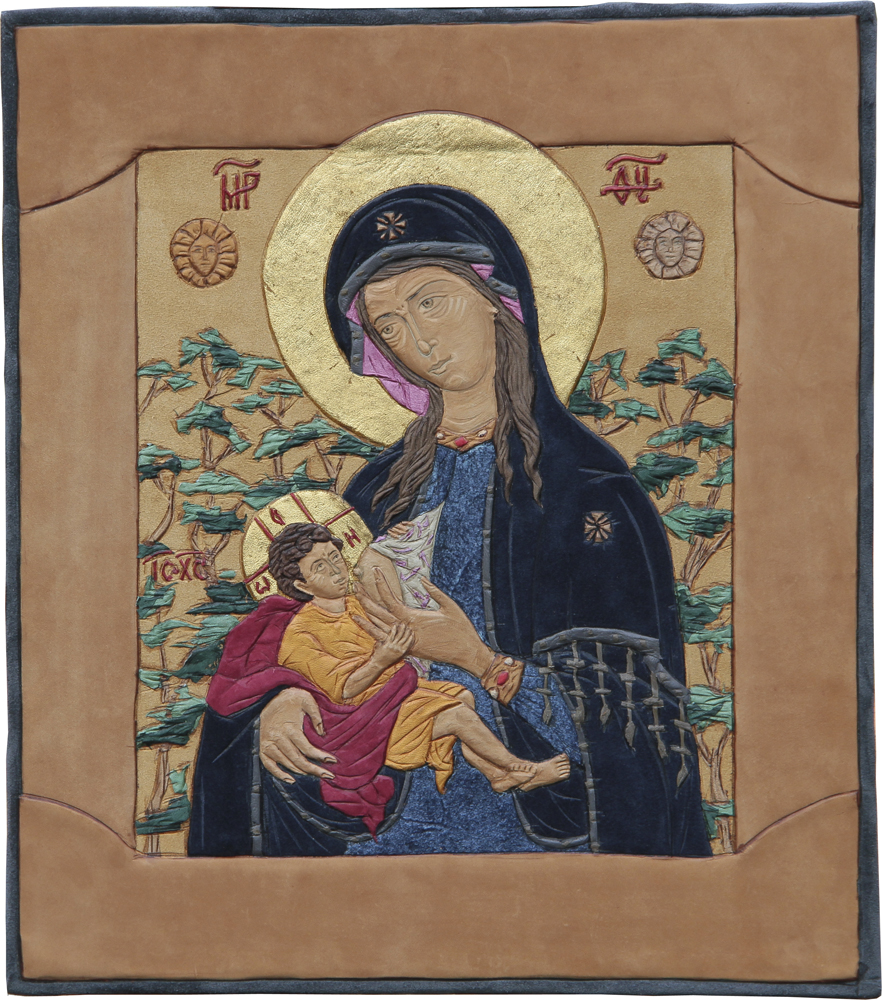

|  | |
| Икона Божией Матери Млекопитательница. Кожа, сусальное золото, нефрит. 38 x 34 см. |
|
Mother of God Icon Milkgiver. Leather, tinsel, gold leaf, nephrite. 38 x 34 cm. |
|
Ікона Божої Матері Млекопитательница. Шкіра, сусальне золото, нефрит. 38 x 34 см. |
|